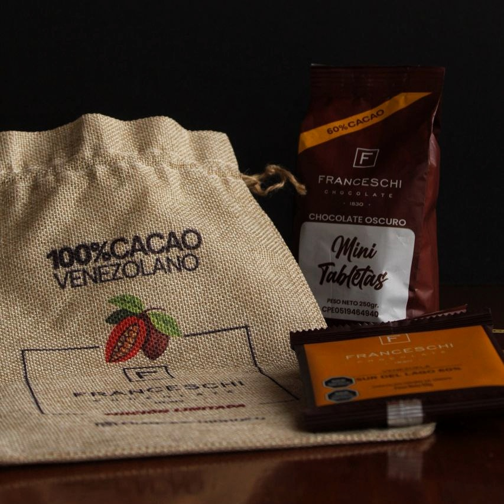

Identity That Crosses Borders: Success Stories in the Export of Venezuelan Gastronomic Products


Much More Than Flavor
In the state of Sucre, Venezuela, a land of beautiful landscapes, high-quality products are born that tell stories. Gastronomy, understood in its broadest and most multidimensional sense as knowledge, techniques, history, social impact, and sustainability, offers much more than food; it allows for the creation of narratives that cross borders and connect with consumers seeking authenticity.

Today, in markets saturated with similar products, those stories, cultural roots, and identity become true competitive advantages. Sucre, known for its beaches, climate, and cacao plantations, holds the magic that allows companies like Cacao San José, with its Franceschi chocolate brand, and Destilería Carúpano, with its centuries-old rum tradition, to offer high-quality products that carry with them a rich culture and history.
According to the FAO (2017), this added value emerges when a product ceases to be merely a raw material and becomes something that reflects history, quality, and authenticity. And although Venezuela is not among the leading exporters of food or beverages in the region, it has managed to stand out precisely because of this transformation. For example, between January and April of this year, Venezuelan rum exported more than two million cases to one hundred countries (Banca y Negocios, 2025).
Behind these numbers are real stories—strategies built with patience and passion.
"Planting Cacao, Building the Future" – The Franceschi Chocolate Case

"Added value leans more towards the development of people... training the producer with structures that allow them to guarantee their growth" – Jhoan Andrade, Manager of Cacao San José.
From the Land to the Chocolate Bar
In the Paria Peninsula is Cacao San José, with an estate full of history to tell through its chocolate brand Franceschi. They have successfully integrated quality, sustainability, cultural identity, and community development, supported by three fundamental pillars that uphold their unique proposition.
Total traceability is one of these pillars; each batch of cacao used to make their chocolate can be traced from the bean to the producer’s name and location, making their chocolate 100% traceable. Some premium chocolate packaging even displays the batch number used in production. This generates trust in product quality and safety, promoting a positive reputation in new markets.
The second pillar is their quality cacao. Franceschi preserves seven unique Criollo varieties: Ocumare 61, 67, and 77, Chuao, Guasare, Canoabo, and Porcelana, as well as a Forastero cacao from Río Caribe and a Trinitario, all carefully and committedly cultivated at Hacienda San José. For the brand, it is vital that their products are of high quality, as this characteristic also reflects the image they project when exporting.
The third pillar is the B Certification and what they call “social pollination.” As a B Corporation, Franceschi measures its success not only in profits but in its social impact. Through the San José Foundation, over 13 years they have impacted 17,563 children, 2,036 educators, 1,586 producers and entrepreneurs, 4,991 caregivers, and 18,489 patients in health services, demonstrating that their commitment encompasses the entire human chain behind cacao.
Market Strategy: “Venezuela is Cacao”
Cacao San José understands the power of emotional storytelling and cultural connection. Storytelling is the key tool to build lasting relationships with consumers, highlighting not only the product but also the values, history, and people behind it. Franceschi builds a narrative of social impact, traceability, sustainability, and Venezuelan pride, supported by digital media, videos, slogans, and content that humanizes the product.
As Jhoan Andrade says:
“Part of the success is that the brand is recognized by Venezuelans, so that these same Venezuelans around the world exalt and make that product reach other customers... be patient, focus on making quality products, be efficient in productivity... that efficiency is what will allow you to be competitive in international markets.”
Franceschi operates with an export model that combines positioning raw materials and finished products. It exports to more than 23 countries, mainly beans, liquor, and cocoa butter (90% raw materials), but also premium chocolates (10% finished products) that tell stories of origin. Their model professionalizes small producers, preserves unique Criollo varieties, and positions Venezuelan cacao as a product with its own surname.
Carúpano Rum – 250 Years of Tradition in a Bottle
“Rum is an emblematic drink of Venezuela; it represents the camaraderie and warmth of Venezuelans… Ron Carúpano is more than its products, it is a way of life.” – Auroberth Rojas, Manager of Destilería Carúpano.
Founded over 250 years ago in the Macarapana Valley, Ron Carúpano is not just a liquor brand, but an emblem of Venezuelan rum. It has pillars that make it unique.
The water used to make the rum comes from springs or deep wells, which guarantees purity and prevents unwanted odors or flavors.
The exceptional microclimate of the Macarapana Valley, in Carúpano, Sucre state, allows the aging of the rum to accelerate and intensify, contributing to its distinctive flavor.
The figure of the Master Blender, Carmen López de Bastidas, the only woman in that role in Venezuela, has developed for over 35 years the unique profiles of Destilería Carúpano, bringing mastery and passion to every bottle.
Since 2022, the “Rum of Venezuela” is a Controlled Designation of Origin (DOC) that requires the rum to be made with 100% Venezuelan cane molasses, aged at least two years in oak barrels, and produced entirely in the country. This differentiates Venezuelan rum and consolidates its prestige and authenticity.

Market Strategy: “A 250-Year Legacy...”
Ron Carúpano has built its market strategy by merging Venezuelan heritage with the sophistication demanded by the international market, emotionally connecting with consumers. This narrative transforms each bottle into more than just a drink: a fragment of living history that travels to countries like the United States and Europe. Products such as the “Legendario” and “Reserva 21” have become symbols of luxury backed by international awards that consolidate their prestige.
Challenges and Opportunities: How to Cross Borders?
"One must be persistent with intelligence... success first comes from strengthening your brand locally" – Jhoan Andrade.
Both companies have faced internal barriers such as logistics and socio-political issues, as well as competition and saturation in international markets. However, they have shown resilience and strategic investment to overcome these obstacles, prioritizing quality and reliability even when this implies additional costs.
Ron Carúpano has responded by strengthening quality as its main competitive argument, while Franceschi has bet on mixed logistical models, producing abroad when necessary and maintaining standards that convince international clients despite internal difficulties.
For these brands, excellence in export is not a matter of chance, but the result of discipline, consistency in quality, operational efficiency, and a long-term strategic vision that includes sustainability.
Ron Carúpano reinforces its premium positioning, and Franceschi focuses first on strengthening the local brand, telling real stories, and building long-lasting relationships that withstand crises.
When Added Value Is Born at Home
Both Ron Carúpano and Franceschi Chocolate understand that competing in international markets is not just about technical quality; it is about projecting cultural identity as a strategy.
Ron Carúpano builds luxury and exclusivity from its history and tradition; Franceschi does so through sustainability and the connection with local producers. Both brands have turned their origin into a competitive advantage and a story that emotionally connects with consumers.
As Andrade summarizes:
“Being patient, focusing on quality, maintaining efficiency… is what allows you to compete abroad.”
These interviews reveal how Venezuelan identity and its history can position products overseas and add value without the need to completely transform them. While exporting finished products with higher added value can significantly boost the country’s economy, it is also possible to convey and project national identity through the stories that accompany raw materials, as is the case with cacao.
This strategy could be replicated with other export products such as fruits or coffee, which are often easier to distribute from Venezuela.
Despite internal logistical and socio-political challenges, persistence, sustained quality, and a marketing narrative that highlights heritage and the human effort behind the products are key for Venezuelan gastronomy to cross borders.
As Franceschi summarizes:
“Being Venezuelan is also that. Knowing that what is born here can conquer the world.”